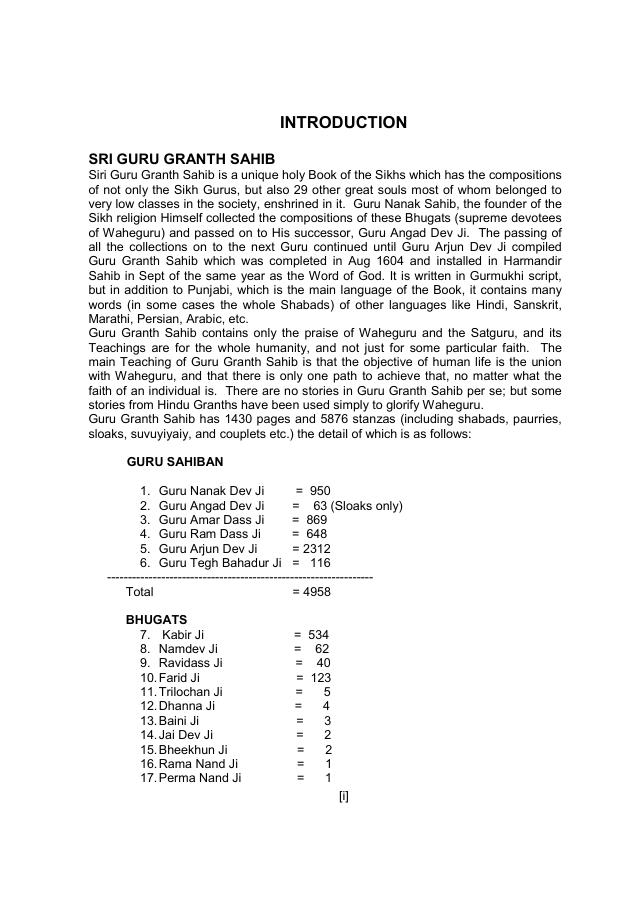

Read Like a Book
A page-turning reading interface designed for desktop and mobile screens.
A DIGITAL READING EDITION
English Translation
Explore the English translation of Sri Guru Granth Sahib Ji through an accessible digital reading experience. Read online or download the complete PDF free of charge.

A page-turning reading interface designed for desktop and mobile screens.
Use the reader’s browser-based search to find words and phrases present in the PDF text layer. Image-only scanned text may not be searchable.
Download the complete translation for offline reading.
Open the reader to search the embedded PDF text in English or Gurmukhi. Search is performed in your browser and is not sent to a server.
Publisher: M.S. Grafico · Rajpura, Patiala (Pb), India · Email: msgrafico23@gmail.com · msgrafico.com